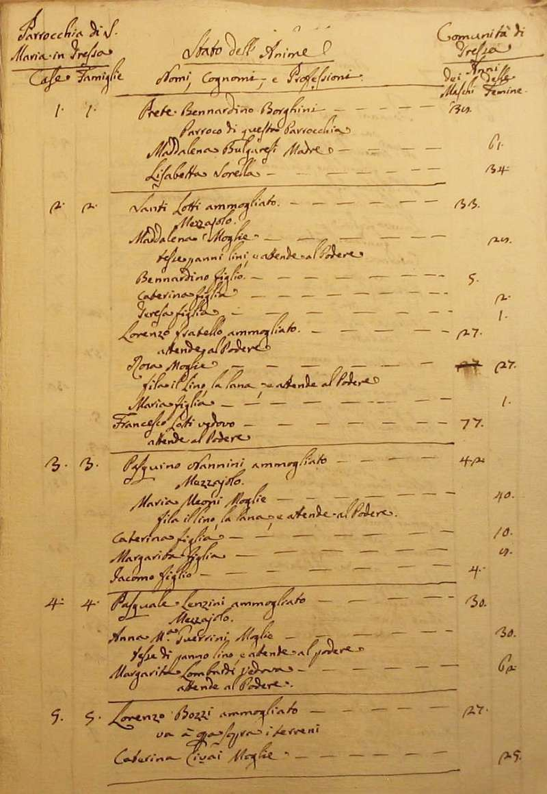
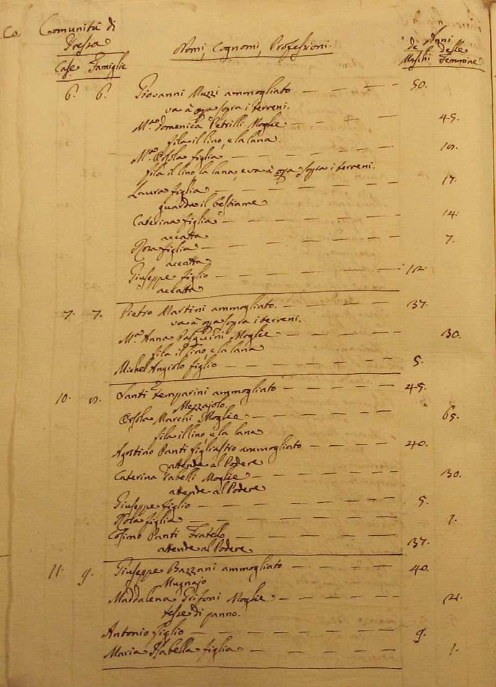
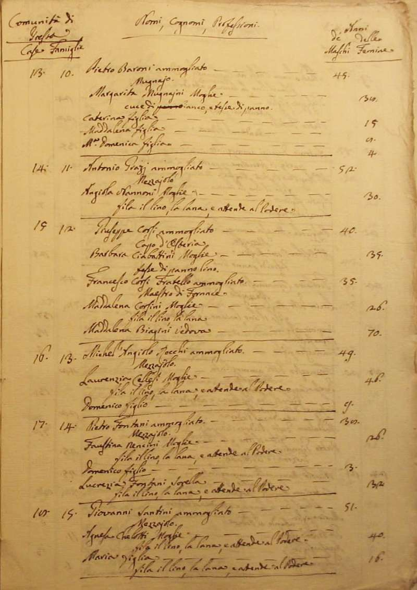
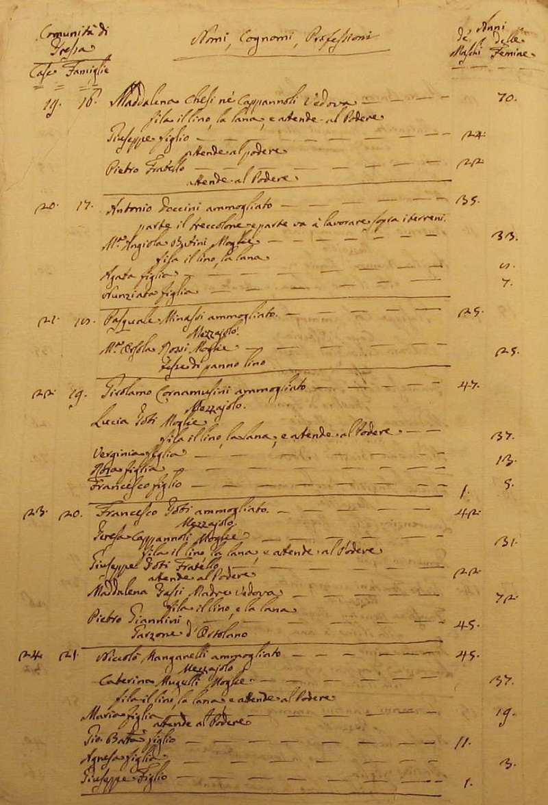
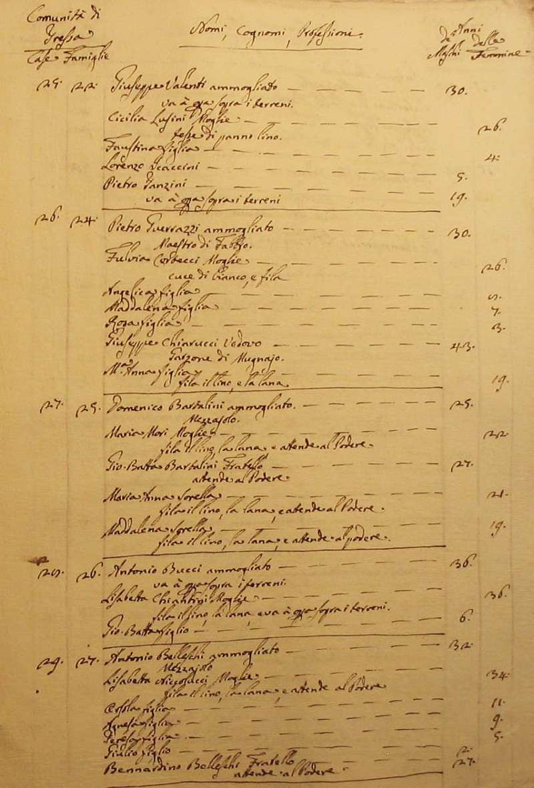
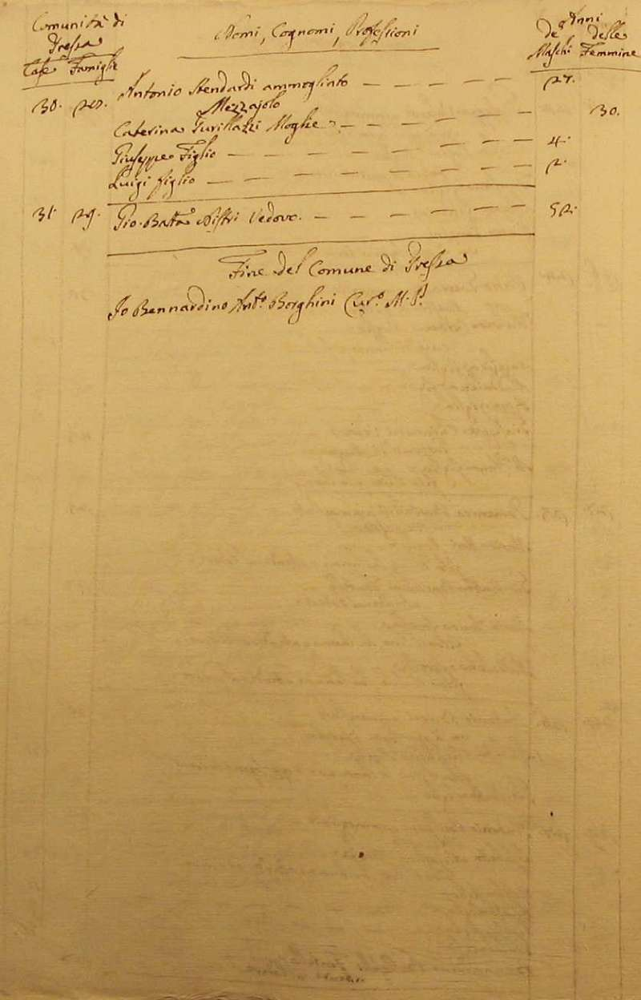
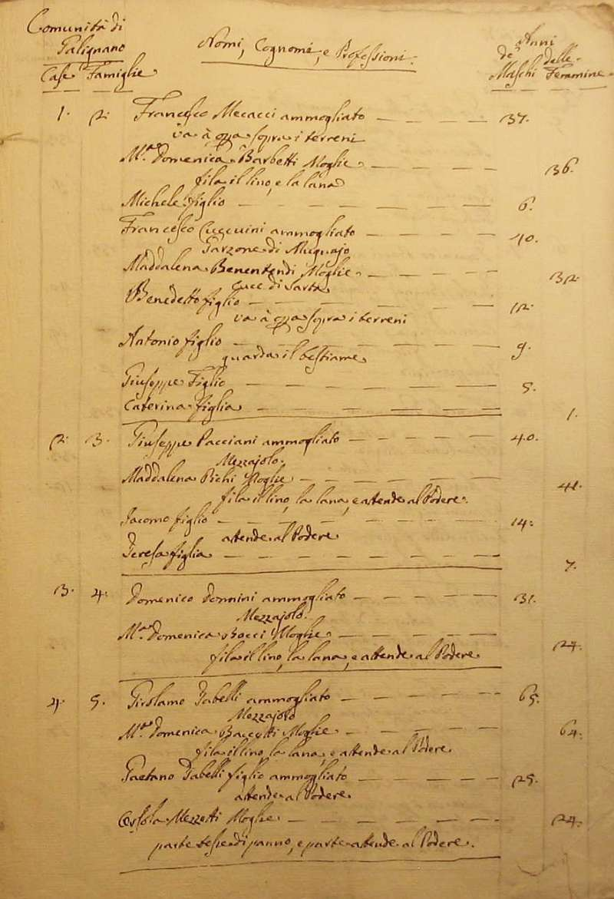
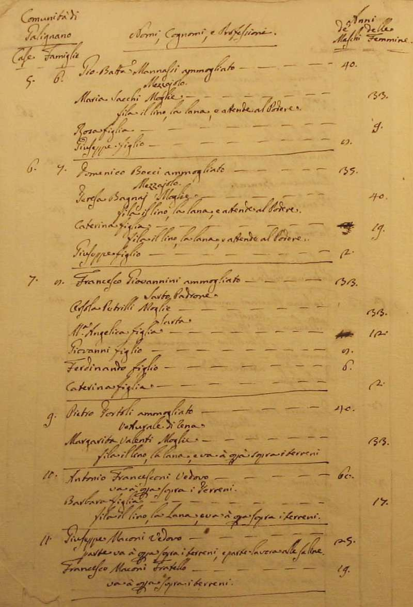
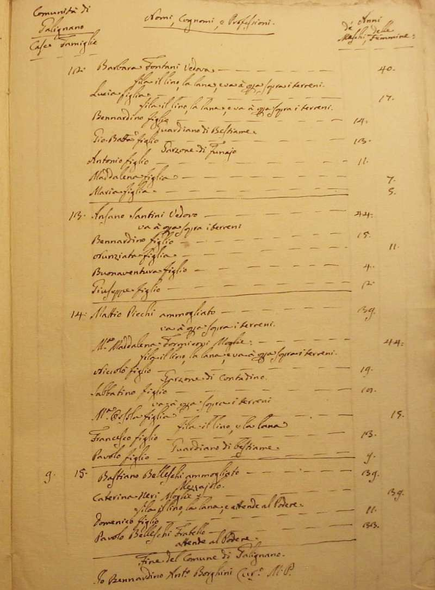

|
Ritorna all'indice delle parrocchie
Il numero abbinato ad ogni famiglia indica la relativa posizione nello Stato delle Anime
1 - Prete Bennardino Borghini - Parroco di questa Parrocchia
2 - Lotti Santi - mezzaiolo
3 - Nannini Pasquino - mezzaiolo
4 - Lenzini Pasquale - mezzaiolo
5 - Bozzi Lorenzo - va a opera sopra i terreni
6 - Muzzi Giovanni - va a opera sopra i terreni - 7
7 - Martini Pietro - va a opera sopra i terreni
8 - Temparini Santi - mezzaiolo
8 - Panti Agostino - figliastro di Temparini Santi - attende al podere
9 - Bazzani Giuseppe - mugnaio
10 - Baroni Pietro - mugnaio
11 - Grazi - mezzaiolo
12 - Cossi Giuseppe - capo d'osteria
13 - Rocchi Michel'Angiolo - mezzaiolo
14 - Fontani Pietro - mezzaiolo
15 - Santini Giovanni - mezzaiolo
16 - Cappannoli Maddalena - vedova nata Chesi - fila il lino la lana e atende al podere - 3
17 - Doccini Antonio - parte il treccolone e parte va a lavorare sopra i terreni
18 - Minassi Pasquale - mezzaiolo
19 - Cornamusini Girolamo - mezzaiolo - 5
20 - Goti Francesco - mezzaiolo
21 - Manganelli Niccolò - mezzaiolo
22 - Valenti Giuseppe - va a opera sopra i terreni
24 - Guerrazzi Pietro - maestro di fabbro
25 - Bartalini Domenico - mezzaiolo
26 - Bucci Antonio - va a opera sopra i terreni
27 - Belleschi Antonio - mezzaiolo
28 - Stendardi Antonio - mezzaiolo
29 - Nistri Giovanni Battista - n. d. - 1
Comunità di Galignano
2 - Mecacci Francesco - va a opera sopra i terreni - 8
2 - Cuccuini Francesco - vive con la famiglia in casa di Mecacci Francesco - garzone di mugnaio
3 - Pacciani Giuseppe - mezzaiolo
4 - Donnini Domenico - mezzaiolo
5 - Tabelli Girolamo - mezzaiolo
6 - Mannassi Giovanni Battista - mezzaiolo
7 - Bocci Domenico - mezzaiolo
8 - Giovannini Francesco - sarto padrone
9 - Tortoli Pietro - vetturale di rena
10 - Francesconi Antonio - va a opera sopra i terreni - 2
11 - Maconi Giuseppe - parte va a opera sopra i terreni e parte lavora alle saline
12 - Fontani Barbara - vedova - fila il lino la lana e va a opera sopra i terreni - 7
13 - Santini Ansano - va a opera sopra i terreni
14 - Picchi Mattio - va a opera sopra i terreni
15 - Belleschi Bastiano - mezzaiolo - 4









Torna ad inizio pagina
Ritorna all'indice delle parrocchie
| |

|